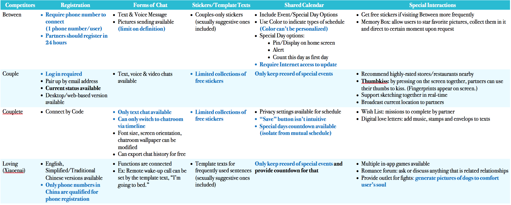
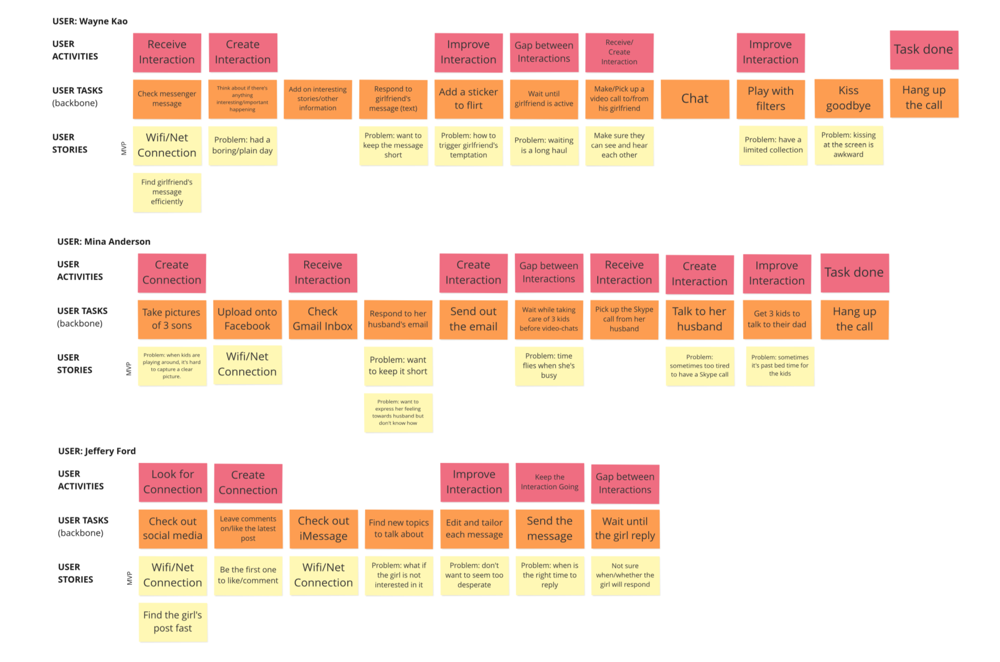
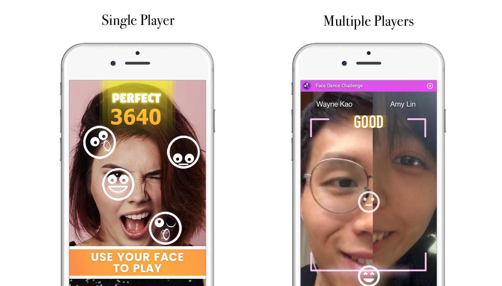

FDC for LDR Couples
Interaction Design
Are you in a long distance relationship (LDR)? Feel your partner even when you’re apart!
Couples in LDR are no different from normal couples – we also crave for a sense of intimacy, which often times comes from the sense of touch.
Some Background Information
FDC for LDR Couples is a 12-week individual project in which I was given full flexibility to use any technology and UX research method to solve any problem. Due to the difficulties I faced when I first started a long-distance relationship (LDR), I decided to tackle the sense of intimacy sacrificed because of the distance with the power of technology.
Problem Statement
As people are growing up, we might be faced with the dilemma between pursuing a career/degree and maintaining a romantic relationship with our special someone. To strike a balance between the two, more and more people start a long-distance relationship (LDR). The up side of it is that we have more time and personal space to enjoy our lives and spend time with friends and family while the down side is that we have to endure the days of loneliness, not being able to hug each other or just to hold hands on a bad day.
As technology advances, we can now text or video-chat with our partner to share every little thing that happen around us at approximately the same time. Still, the means of interaction might be limited to words and stickers. Physical interactions and hence the playfulness might be sacrificed.
Solution Overview
Face Dance Challenge (FDC) is originally a mobile-based application/game that allows users to score by changing their facial expression according to the emojis that show up on screen. However, in this version of FDC, it isn’t a mobile application itself. Instead, it’s designed to be an extension in the Facebook Messenger, aiming to spice up interaction between couples in LDRs. The design of FDC is based on the video-chat and gaming feature that Messenger already supports. However, it also allows physical interaction and the sense of touch to be transmitted via the vibration or haptic feedback of iPhones. Namely, FDC is a game that features a combination of image, sound and physical interaction. This combination makes up for the problem that couples in LDRs create less shared memories due to geographic barriers. By playing games while video chatting, couples can see each other’s facial expression and listen to their screams and laughter as if they were on each other’s sides. Interact with High-Fi Prototype here.
Design Process
At the problem exploration stage, I went through several boards of a popular BBS forum in Taiwan, called PTT, which has conserved online discussion data for more than 20 years. The boards I referred to includes Boy-Girl, Sex and Long-Distant. The user research method I used is a mixure of diary study and semi-constructed interview -- I read through all the discussions that contains key words like long distance relationship and problems to identify the difficulties LDR couples face. Eventually, I found that not only sentimental communication but also physical interactions play a significant role in relationships.
Competitive Analysis
Before I jump into the solution, I also did a competitive analysis on the current technological solutions available on the market. What surprised me was that despite the large number of LDR couples, all the software solutions I found on the market target couples who can meet relatively frequently. Hence, the features of these solutions are based on storing created memories. Sadly, for LDR couples, if they cannot meet their partners in person, memories can be hard to create. In that sense, these couples depend on contemplating on their good old days to maintain their attraction with their partners.
With these findings in mind, the final scope of my project was set – (1) spicing up the interactions between couples, physical interactions included and (2) create something that is shared between these partners.

After my project scope was defined, over the following design process, my solution focus has always been on the improvement of physical interaction between LDR couples. During ideation, I came up with 8 potential solutions to the problem. Interestingly, almost all the ideas I came up with require the users to buy extra products or services such as gloves, meals or a sensor. Nonetheless, I have always kept the welfare of my target users in my mind and wanted to benefit as many couples in LDR as I do as possible, which is the reason why I choose Messenger as the foundation of my final solution.

Wayne, Mina and Jeffery are Pro-personas while Tina is an Anti-persona.
To further identify my target users, I built 4 personas, including 3 pro-persona and 1 anti-persona. All of these personas are based on the discussions I read on the PTT forum, which are all true stories.
To check the validity of my final solution, I went through story-mapping to model user activities and their current potential ways of interacting with their couples. Finally, I iterate through 3 rounds of QOCs (Question, Options and Criteria) to explore the potential key features I want to include in my final design as well as how these features will be presented.
Low-fi prototype demonstration
With clearer picture of how my final design would be like, I started to work on my low-fi prototypes that models 10 tasks and 15+ interactions I would like to test.
Major Design Change
The biggest design change occurred during my first user test on paper prototypes when my user told me that she had no idea that couples playing FDC are in charge of one side of the facial expression despite the instruction provided before the game starts.
In the original design, the emoji would fly into the screen vertically from the bottom side of the screen. Since my user was confused about how to react when she saw an emoji flying on the other side of the screen, I decided that emoji would always fly in the middle from the bottom, which sacrifice the level of difficulty but improves the interaction.
Iterations
From the brainstorming to prototyping, I’m always thinking about my design. Whenever I have a new idea in my mind, I always talk to my boyfriend about it and discuss the pros and cons of it. Especially when I’m working on high-fi prototypes, I come up with new designs every day and usually spend more than a half of prototyping time to refine the design I made earlier. Generating new ideas every day was hard; however, it turned out that I do have made a lot of breakthroughs in terms of the visual representation as well as the interactions between screens and users. For instance, at first, the only way for my users to switch between screens was by tapping on the space on the screen but as I discovered more about InVision, I eventually set timer to switch between screens to make the motion of flying emoji much similar to how it would work in reality.
One Step Further

Incentive-increasing features
My design philosophy has always been “People respond to incentives.” Aside from maintaining consistency across the whole project, I always think one step further as of how to make my design appealing and attractive in the long run. Thus, an explicit feature that has to do with incentive-creating is the mechanism that couples can unlock more interactions as they score more points. Additionally, I add another line of word hinting the users on how far they are from the new interaction. Other than that, I want to avoid LDR couples who play FDC to fight because of the game. Thus, the mechanism of the game itself awards good teamwork but if only one of the couple performs well, they can still gain points. Through this scoring mechanism, I would like to convey the message that though it’s perfect that we, as a couple, can work well together, if it turns out to be just the opposite, it’s still okay because one’s strength can help make up for the other’s weakness.
Final Screens

Impact
The societal impact I would like to make on couples in LDR is that there’s no need to be afraid of the distance between them and their special ones and it’s okay to run out of things to share during video-chat. LDR couples are no different from ordinary couples. Though reminiscing the good old days helps them go through the dark lonely nights, couples can still create new memories in spite of being physically apart.
Through my design, I want to inspire more potential or future design for LDR couples as during my competitive analysis, I found that there’s less existing digital solutions designed just for LDR couples.
Takeaway
The hardest part of going through the design process is not design itself. Instead, for me, it’s conquering the fear of falling behind. I’m really fortunate to have Tonya as my instructor to boost me up when I felt that I could not see my strength in the field of information with an economics background. However, as it turned out, my past-4-year training in economics does help me think more thoroughly and go one step forward to consider the long-run effect of my product.
Shih-Ting (Amy) in FDC
My Role
- Interaction Designer
- UX Researcher
- Project Manager
What I Did
- Ideation
- UX Research
- Storymapping
- Low-fi Mockups
- High-fi Prototypes